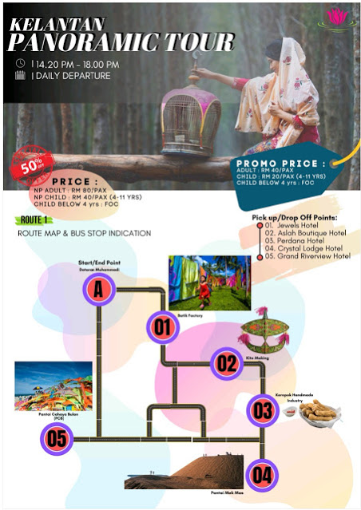
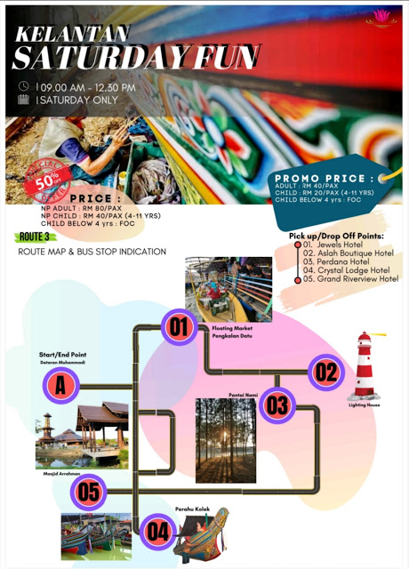
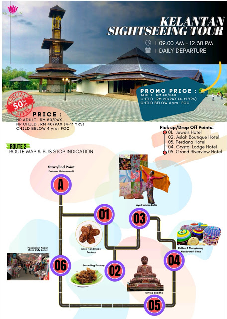

1.“Kelantan Sightseeing Tour”
Discover the top attractions in Kelantan with our sightseeing tour. Visit the famous landmarks and learn about the rich history of Kelantan.
Selaras dengan slogan “Maghi Derak Kelate” (Datang Melancong Ke Negeri Kelantan), ini jelas menunjukkan usaha dari pihak kerajaan untuk menggalakan kembali sektor pelancongan di negeri ini dan menjadikan Kelantan sebagai satu destinasi pelancongan wajib dikunjungi. Tujuan perkhidmatan “shuttle bus” kepada para pelancong yang berkunjung ke Kota Bharu melalui pakej-pakej khas seperti pakej separuh hari melawat sekitar kawasan tarikan pelancongan di Kota Bharu, pakej ke tempat bersejarah dan warisan serta pakej melawat produk eko pelancongan. Antara tempat-tempat yang boleh dilawati oleh para pelancong adalah seperti Pantai Cahaya Bulan, Pantai Mek Mas, Dataran Muhammadi, Pengkalan Kubor, Pasar Terapung Pengkalan Datu, Masjid Ar-Rahman dan sebagainya.




2.Kampung Kraftangan
Kampung Kraftangan ini dibina dari elemen kayu. Ia digunakan sebagai pusat perniagaan untuk menjual songket, batik, barangan perak dan seni kraftangan yang mempunyai nilai estatika yang tinggi yang mana akan menarik perhatian setiap pelancong. Berikut adalah lokasi ke Kampung Kraftangan


3.Kota Sultan Ismail Petra
Pintu Gerbang Kota Sultan Ismail Petra atau dikenali juga sebagai Menara Rehal merupakan mercu tanda bagi negeri Kelantan khususnya Kota Bharu. Kawasan ini merupakan kawasan tumpuan utama pelancongan di Kelantan.
Di kawasan ini letaknya monumen-monumen bersejarah seperti Istana Jahar, Padang Merdeka, Bank Pitis, Bank Kerapu, dan Istana Balai Besar.

4.Gelanggang Seni Kota Bharu
Dikenali sebagai pusat kebudayaan yang dipenuhi oleh persembahan warisan kebudayaan negeri Kelantan. Persembahan tersebut diwarnai oleh pelbagai persembahan tradisional seperti wayang kulit, seni silat tari, permainan gasing, demo buat wau dan persembahan muzik.
Lokasi Gelanggang Seni adalah sebagaimana berikut :